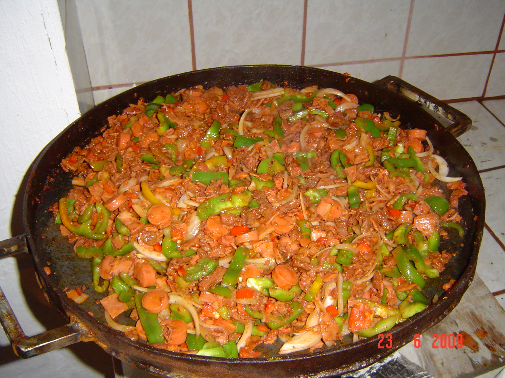

Mexican Discada

Discada is a popular dish in Northen Mexico that contains a mixture
of grilled meats, traditionally cooked on a disk. It's somewhat similar
to paella but it makes a great alternative for a BBQ. This is a hearty
and flavorful meal that you're sure to love.
Ingredients
- ½ pound hanger steak, cut into 1/2-in. pieces
- 4 Bacon slices chopped
- ½ pound Ham OR Pork tenderloin
- ½ pound Sausage
- ½ pound Chorizo chopped
- 1 Red Bell Pepper
- 1 Yellow Onion
- 1 Tomato
- 2 Jalapenos (optional)
- 1 cup Mexicn Beer
- Canola Oil
- 3 Garlic cloves
- 2 tsp Cumin
- ½ tsp Black pepper
- ½ cup cilantro
- Corn tortillas
- Toppings: Avocado, Pico de Gallo, Lime (optional)
Steps
- Cook bacon in a large skillet over medium-high, stirring occasionally, until just starting to crisp, about 6 minutes.
Add chorizo; cook, stirring to break into pieces, until chorizo is browned and bacon is crisp, 4 to 6 minutes.
Using a slotted spoon, transfer bacon and chorizo to a large bowl, reserving drippings in skillet.
- Add two Tablespoons of oil and Add pork, steak, hot dogs. Cook, stirring occasionally, until browned, 5 to 6 minutes.
Using a slotted spoon, transfer pork mixture to bowl with bacon mixture.
- Add onion, bell pepper, jalapeños, cumin, black pepper, and 1 1/2 teaspoons salt;
cook, stirring occasionally, until tender, about 8 minutes. Add tomatoes and garlic; cook, stirring often, until
tomatoes have softened, about 4 minutes. Stir in beer, cilantro, and bacon mixture. Reduce temperature to medium-low;
cook, stirring occasionally, until liquid has mostly evaporated, about 10 minutes. Serve in tortillas with desired toppings.